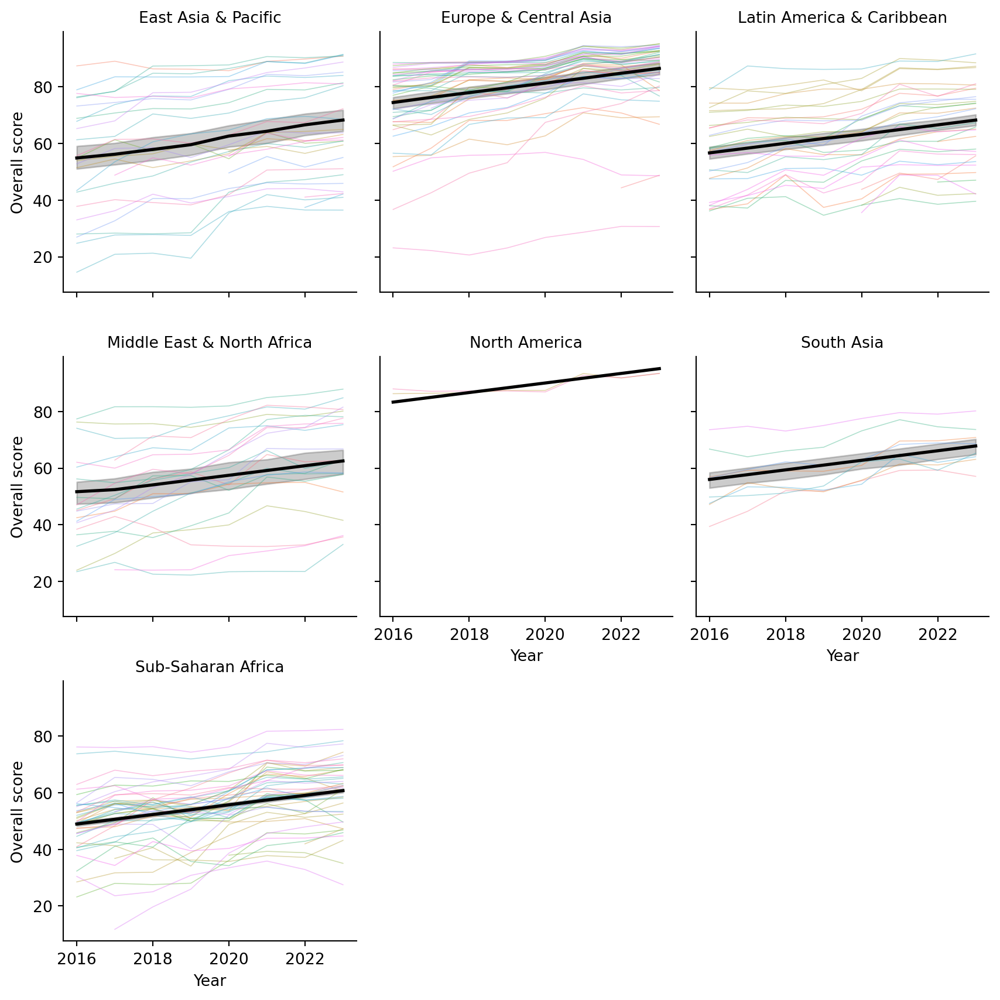

World Bank Statistical Performance Indicators (TidyTuesday!)
Python
Tidy Tuesday
Visualization
Author
Brandon LeBeau
Published
November 24, 2025
This week Tidy Tuesday data are about Statistical Performance Indicators from the World Bank. The Statistical Performance Indicators evaluate how effectively countries produce, manage, and disseminate high-quality official statistics. The data are more prevalent from 2016 to 2023, so I filtered the data to restrict the range within that window. I also removed values that were labeled as “Not classified” from the income attribute. I fit a few linear models to see how overall scores changed over time, controlling for region and income level. Finally, I visualized the results with both static and interactive plots.
Code
import pandas as pdimport warningswarnings.filterwarnings("ignore", category=FutureWarning, message=".*observed=False is deprecated and will be changed to True.*",)import seaborn as snsimport matplotlib.pyplot as pltspi_indicators = pd.read_csv('https://raw.githubusercontent.com/rfordatascience/tidytuesday/main/data/2025/2025-11-25/spi_indicators.csv')spi_indicators['year_centered'] = spi_indicators['year'] - spi_indicators['year'].mean()# Filter to 2016 or later, removes missing dataspi_indicators = spi_indicators[ (spi_indicators['year'] >=2016) & (spi_indicators['income'].notna()) & (spi_indicators['region'].notna()) & (spi_indicators['income'] !='Not classified')]
Statistical Modeling
My first model fits one that includes only the year (centered). The second model adds region and income level as predictors. The third model adds an interaction between region and income level. I’m interested in knowing whether the trend across years remains significant after controlling for region and income, and whether the interaction between region and income level is significant.
I’m using statsmodels for this analysis. The default behavior is to include an intercept, so categorical variables are converted to dummy variables with one level omitted as the reference group. The group closest to A in alphabetical order is treated as the reference group, for this analysis the reference group for region is “East Asia & Pacific” and for income level is “High income”.
The first model, with just year included, explained less than 5% of the total variance. The slope was 1.67, suggesting that on average, the overall score increased by 1.67 points per year.
Code
import statsmodels.api as smfrom patsy import dmatricesy, X = dmatrices('overall_score ~ year_centered', data=spi_indicators, return_type='dataframe')mod = sm.OLS(y, X)res = mod.fit()print(res.summary())
The second model, was more informative. The R-squared increased to 0.48, indicating that region and income level explain a substantial portion of the variance in overall scores. The slope for year stayed about the same at 1.68, suggesting that after accounting for region and income level, the average increase in overall score per year is similar in magnitude.
Code
import statsmodels.api as smfrom patsy import dmatricesy, X = dmatrices('overall_score ~ region + income + year_centered', data=spi_indicators, return_type='dataframe')mod = sm.OLS(y, X)res = mod.fit()print(res.summary())
Here is where I explore a few interactions. First, I included an interaction between region and income. The R-squared increased to 0.56, suggesting that this interaction was useful in explaining additional variance in overall scores. The slope for year remained similar at 1.68. I’m not going to interpret all the coefficients here, but the interaction terms indicate how the effect of income level on overall score varies by region.
Code
import statsmodels.api as smfrom patsy import dmatricesy, X = dmatrices('overall_score ~ region + income + region:income + year_centered', data=spi_indicators, return_type='dataframe')mod = sm.OLS(y, X)res = mod.fit()print(res.summary())
The final interaction added was between region and year. This interaction proved to not be as useful as the first. Overall, the R-square was the same as the previous model. When looking at each interaction coefficient estimate between year and region, only one showed some signal, suggesting a stronger positive trend over time for the Middle East & North Africa region compared to the reference group (East Asia & Pacific). I decided to not include this interaction in my final evaluation and visualization of the study results.
Code
import statsmodels.api as smfrom patsy import dmatricesy2, X2 = dmatrices('overall_score ~ region + income + region:income + year_centered + region:year_centered', data=spi_indicators, return_type='dataframe')mod2 = sm.OLS(y2, X2)res2 = mod2.fit()print(res2.summary())
I chose to use the model with an interaction between region and income and a single pooled year trend for the final model to visualize. The following figure uses seaborn to create facets for each region. Thinner lines are shown for each country within the region, while a thicker black line shows the overall trend predicted by the regression model. The slope for each facet is assumed to be the same in this scenario, with differences in location based on the region that they are in. Differences in income are not directly shown here. Overall, we can see that some regions have higher overall scores than others, but the trend over time is generally positive across all regions. Furthermore, the fit for different regions varies, with some regions showing a tighter clustering of country-level scores around the predicted trend line, but many having variation across this trend line.
Code
import seaborn as snsimport matplotlib.pyplot as plt# Make sure 'region' and 'country' are categoricalspi_indicators['region'] = spi_indicators['region'].astype('category')spi_indicators['country'] = spi_indicators['country'].astype('category')spi_indicators["pred"] = res.predict(X)# Facet by regiong = sns.FacetGrid( spi_indicators, col="region", col_wrap=3, height=3, sharey=True)# --- country-level raw data (one line per country, per region) ---def country_lines(data, **kwargs): sns.lineplot( data=data, x="year", y="overall_score", hue="country", units="country", # one line per country estimator=None, # no aggregation lw=0.6, alpha=0.4, legend=False, # avoid enormous legend**kwargs )g.map_dataframe(country_lines)# --- region-level prediction line ---g.map_dataframe( sns.lineplot, x="year", y="pred", color="black", lw=2)# Formattingg.set_axis_labels("Year", "Overall score")g.set_titles(col_template="{col_name}")plt.tight_layout()plt.show()

Interactive Visualization
Here is an interactive version that shows the average region trend and each country as a line showing their trajectory. You should be able to hover over this to see each country.
Code
import plotly.graph_objects as gofrom plotly.subplots import make_subplotsimport numpy as npimport mathspi_indicators["pred"] = res.predict(X)regions =sorted(spi_indicators["region"].unique())# Layout for facetsncols =3nrows = math.ceil(len(regions) / ncols)fig = make_subplots( rows=nrows, cols=ncols, shared_xaxes=True, shared_yaxes=True, subplot_titles=regions)# Helper to map index -> subplot row/coldef idx_to_rowcol(idx, ncols): row = idx // ncols +1 col = idx % ncols +1return row, colfor i, region inenumerate(regions): row, col = idx_to_rowcol(i, ncols) df_reg = spi_indicators[spi_indicators["region"] == region].copy()# --- country-level raw lines ---for country, df_country in df_reg.groupby("country"): fig.add_trace( go.Scatter( x=df_country["year"], y=df_country["overall_score"], mode="lines", line=dict(width=1), name=country, hovertemplate=("Region: %{customdata[0]}<br>"+"Country: %{customdata[1]}<br>"+"Year: %{x}<br>"+"Score: %{y:.2f}<extra></extra>" ), customdata=np.stack([ df_country["region"], df_country["country"] ], axis=-1), showlegend=False# avoid huge legend ), row=row, col=col ) df_pred = ( df_reg[["year", "pred"]] .groupby("year", as_index=False)["pred"] .mean() .sort_values("year") ) fig.add_trace( go.Scatter( x=df_pred["year"], y=df_pred["pred"], mode="lines", line=dict(width=5, color="black"), name=f"{region} regression", hovertemplate=("Region: "+ region +"<br>"+"Year: %{x}<br>"+"Predicted score: %{y:.2f}<extra></extra>" ), showlegend=False ), row=row, col=col )# --- Layout: white background, gridlines, labels ---fig.update_layout( title="Overall score over time by region and country", plot_bgcolor="white", paper_bgcolor="white", height=400* nrows,)fig.update_xaxes( title_text="Year", showgrid=True, gridcolor="lightgray")fig.update_yaxes( title_text="Overall score", showgrid=True, gridcolor="lightgray")fig.show()
Bonus: Mixed Model
Finally, before I ignored the correlation due to each country, just using ordinary least squares. At the end here, I consider a final mixed model that includes a random intercept for each country to help account for some of the correlation. Note, I do not include a random slope for time, but this is something that you could definitely do here. The assumption with the random intercept only model is that the countries only differ from their starting point, but have the same trend. Including a random slope for year would relax this assumption to allow countries to have a different starting place and also a different slope. I made sure to remove any missing data and also removed the interaction between region and income attributes as there was a combination that was not present in the data. I didn’t want to fiddle with the design matrix to specify. Also, because year is centered, the random intercept represents each country’s deviation from the expected overall score at the mean year (approximately 2019).
Model results show the random intercept having a large variance, suggesting that there is substantial variability in overall scores across countries that is not explained by the fixed effects alone. The fixed effect for year remains positive and is larger than before, almost 2, indicating that even after accounting for country-level variability, there is still a positive trend in overall scores over time.
Code
import statsmodels.formula.api as smffrom statsmodels.tools.sm_exceptions import ConvergenceWarningcols = ["overall_score", "region", "income", "year_centered", "country"]spi_clean = ( spi_indicators .dropna(subset=cols) .copy() .reset_index(drop=True) # avoid weird index issues)md = smf.mixedlm("overall_score ~ region + income + year_centered", data=spi_clean, groups="country"# <<< key change)mdf = md.fit(method=["lbfgs"])print(mdf.summary())
Here is a visualization of the random intercepts from the mixed models as an interactive plotly figure. Larger random intercepts suggest that the country was further above the average trend line for each region, smaller random intercepts suggest that this country was further below the average trend line for each region. You can hover over each line to see each country name and their random effect predicted value.
Code
# Extract random intercepts for each countryre = mdf.random_effects # dict: {country: Series}re_df = ( pd.DataFrame({"country": k,"rand_intercept": v.iloc[0] } for k, v in re.items()) .sort_values("rand_intercept") # order by random effect .reset_index(drop=True))re_df["y"] = re_df.indeximport plotly.graph_objects as goimport numpy as np# numeric index for vertical positionre_df["y"] = re_df.indexfig = go.Figure()# --- horizontal lines from 0 to effect (like your matplotlib version) ---for _, row in re_df.iterrows(): fig.add_trace( go.Scatter( x=[0, row["rand_intercept"]], y=[row["y"], row["y"]], mode="lines", line=dict(width=1, color="steelblue"), hoverinfo="skip", showlegend=False, ) )# --- points at the end of each line with hover showing country ---fig.add_trace( go.Scatter( x=re_df["rand_intercept"], y=re_df["y"], mode="markers", marker=dict(size=6, color="steelblue"), customdata=re_df[["country"]], hovertemplate=("Country: %{customdata[0]}<br>""Random intercept: %{x:.2f}<extra></extra>" ), showlegend=False, ))# vertical line at 0fig.add_vline( x=0, line_width=1, line_dash="dash", line_color="black")fig.update_layout( title="Country random effects from mixed model", xaxis_title="Random intercept (country effect)", yaxis_title="", plot_bgcolor="white", paper_bgcolor="white", height=600,)fig.update_yaxes(showticklabels=False, showgrid=False, zeroline=False)fig.update_xaxes(showgrid=True, gridcolor="lightgray")fig.show()
Conlusions
Putting everything together, the SPI data tell a fairly optimistic story: statistical performance has improved steadily across the globe over the past decade, and the trend holds even after adjusting for region and income. At the same time, the mixed-model results reveal that countries still differ quite a bit in where they sit relative to that trend line. Some are consistently above expectations, others well below, and many move in surprising ways over time. The plots, both static and interactive, make these patterns easier to explore and show how much detail gets lost in average trends alone. It’s a nice reminder that even simple models can provide meaningful insights when paired with thoughtful visualization.